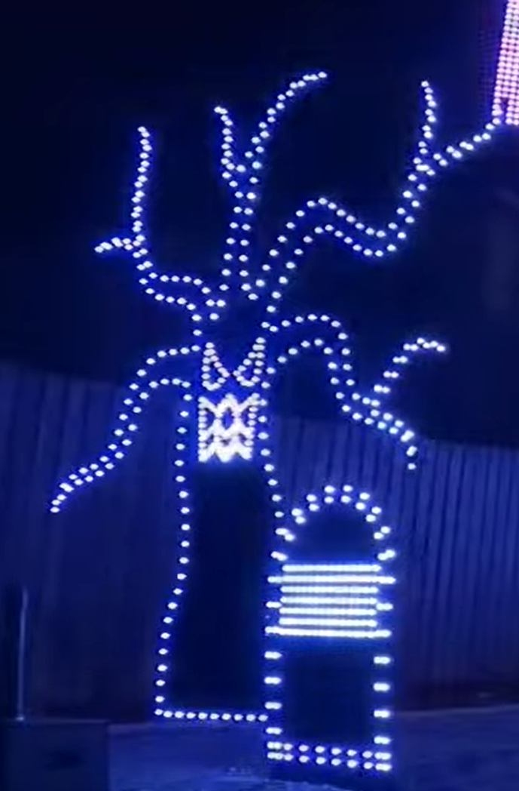
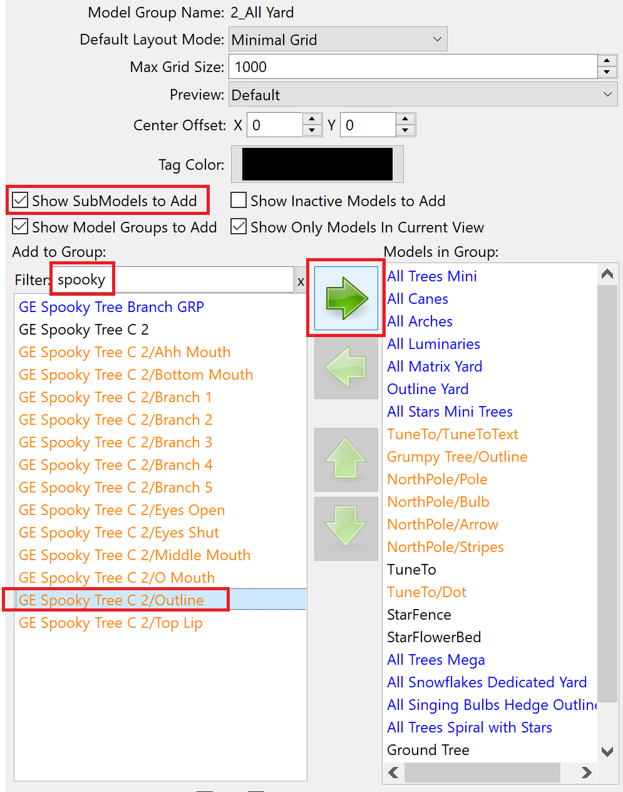

Some people put effects on the "whole house", the "whole yard", "all display", or similar groups. It's tempting to just dump in all the models (thus making the group true to its name). But this can result in a rather unrefined look, especially for props with singing faces, multiple states, a combination prop with multiple models on the same coro, or others that look weird when all the pixels are lit up together.
The solution is to only put select submodels into your groups... for a singing prop maybe just the outlines, for a "triune"/"quartet" maybe just the spinner submodel, etc.
(If you have trouble, review all the areas highlighted in red.)